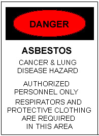

|
Asbestos Removal Projects
From time to time, UK has need to conduct asbestos abatement (removal) projects. The asbestos work is usually connected with construction, renovation, or demolition projects. Asbestos removal is also performed when damaged or deteriorated asbestos-containing building materials are discovered, in order to reduce the potential health hazards to UK employees, students, and visitors. In most cases, asbestos work is performed by a contractor under contract with UK. The asbestos removal company and its personnel are certified by the state and are qualified to perform this work safely. This work should in no way endanger anyone living or working in the affected building or walking outside the building while the work is being completed. Air monitoring is performed on every project by an independent testing lab to ensure that asbestos contamination does not leave the work area and that the work was performed adequately. In fact, you may hear or see the air testing pumps running outside the asbestos abatement area. Because the workers will be disturbing asbestos-containing materials, they will be wearing respirators and protective clothing. Barriers and warning signs will be erected to isolate the work area from the rest of the building. Special waste dumpsters may be present for them to collect the removed building materials. The precautions and work practices used will be in accordance with applicable federal and state regulations and are designed to prevent anyone outside the work area from being exposed to asbestos. These requirements are different for each project, depending upon the type of material being removed and the methods being employed to remove them. If you have any questions regarding any asbestos project and the precautions being taken, please call Environmental Management at 257-3285. An asbestos warning sign will be posted at entrances to the work area. If you see this sign, do not enter the area for any reason. Only trained, authorized personnel may enter. The sign looks like this: 
|
|
| Last
modified 03-30-2004 Send comments to D. Caskey |
|